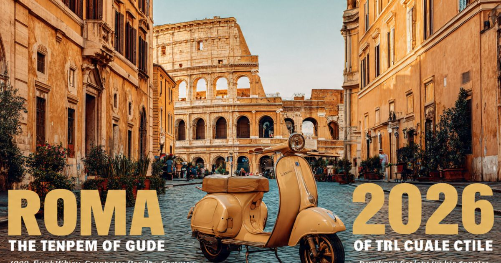

Roma 2026: guia completo para viajar para a Cidade Eterna
Introdução: a cidade que respira história
Roma é, sem dúvida, uma das cidades mais fascinantes e históricas do mundo. Conhecida como a "Cidade Eterna", a capital italiana encanta visitantes de todas as idades com sua arquitetura deslumbrante, sua rica história, sua gastronomia refinada e sua atmosfera única. Seja para explorar o Coliseu, visitar o Vaticano, jogar uma moeda na Fontana di Trevi ou simplesmente saborear um autêntico gelato italiano, a cidade oferece experiências inesquecíveis para todos os perfis de viajantes.
Em 2026, Roma continua sendo um dos destinos preferidos dos viajantes brasileiros. A cidade se prepara para receber turistas do mundo inteiro com uma infraestrutura cada vez mais moderna, mantendo seu charme histórico e sua essência única. Com a realização do Jubileu de 2025, a cidade passou por diversas melhorias que tornam a experiência do visitante ainda mais agradável.
Neste guia completo sobre Roma, você vai encontrar tudo o que precisa saber para planejar sua viagem: a melhor época para visitar, as atrações imperdíveis, os melhores bairros para se hospedar, como se locomover pela cidade, dicas de gastronomia, compras e muito mais.
Nosso objetivo é que você chegue a Roma preparado para aproveitar ao máximo cada minuto nessa cidade encantadora. Afinal, Roma é mais do que um destino — é uma experiência que fica gravada na memória para sempre.

O icônico Coliseu, símbolo máximo da Roma Antiga
Melhor época para visitar Roma
Roma é uma cidade que encanta em todas as estações do ano, mas cada período oferece uma experiência única. A escolha da melhor época depende do que você busca na viagem.
Primavera (março a maio) — Uma das melhores épocas para visitar Roma. As temperaturas são amenas (entre 15°C e 25°C), as flores desabrocham nos jardins da cidade e os dias ficam mais longos. A cidade ganha vida após o inverno, com uma atmosfera vibrante e romântica. Os preços dos hotéis começam a subir com a chegada da alta temporada.
Verão (junho a agosto) — Época mais quente do ano, com temperaturas que podem ultrapassar 35°C. A cidade fica cheia de turistas, os preços são mais altos e as filas nas atrações são longas. No entanto, o verão oferece uma programação intensa de eventos, festivais ao ar livre e noites quentes e animadas. Leve protetor solar e mantenha-se hidratado.
Outono (setembro a novembro) — Muitos consideram o outono a melhor estação para visitar Roma. As temperaturas são agradáveis (entre 15°C e 25°C), as folhas das árvores se transformam em um espetáculo de cores, e a cidade oferece uma atmosfera charmosa e romântica. A alta temporada começa a diminuir após setembro, com preços mais acessíveis.
Inverno (dezembro a fevereiro) — O inverno em Roma é ameno, com temperaturas entre 5°C e 15°C. A cidade se enche de luzes de Natal e decorações especiais. É uma época mais tranquila, com menos turistas e preços mais baixos. Para quem não gosta de calor, esta é a melhor época.
Dica: Se você busca um equilíbrio entre clima agradável e preços razoáveis, a primavera (abril/maio) e o outono (setembro/outubro) são as melhores escolhas. Evite os meses de junho e julho (alta temporada de férias) se quiser economizar.
O que fazer em Roma: atrações imperdíveis
Roma tem uma lista quase infinita de atrações. Separamos as imperdíveis para que você não perca nada:
Coliseu — O símbolo máximo de Roma e do Império Romano. Visite o anfiteatro mais famoso do mundo, onde os gladiadores lutavam. A visita é uma viagem no tempo para a Roma Antiga. Reserve ingressos com antecedência para evitar filas.
Vaticano e Basílica de São Pedro — O menor país do mundo, sede da Igreja Católica. Visite a Basílica de São Pedro, a Capela Sistina (com os afrescos de Michelangelo) e os Museus Vaticanos. A visita à Capela Sistina é uma experiência única e inesquecível.
Fontana di Trevi — A fonte mais famosa de Roma, onde você deve jogar uma moeda para garantir seu retorno à cidade. A fonte é um dos pontos turísticos mais visitados de Roma e é especialmente bonita à noite, quando iluminada.
Panteão — Um dos edifícios antigos mais bem preservados do mundo. O Panteão é uma antiga construção romana, agora uma igreja, com uma cúpula impressionante e uma arquitetura deslumbrante.
Foro Romano — O centro da vida pública na Roma Antiga. Explore as ruínas do antigo fórum, onde a política, o comércio e a religião se encontravam. A vista do alto do Monte Palatino é espetacular.
Piazza Navona — A praça mais famosa de Roma, com suas fontes barrocas e sua atmosfera vibrante. A praça é cercada por restaurantes, cafés e artistas de rua, com a famosa Fontana dei Quattro Fiumi de Bernini.
Trastevere — O bairro boêmio de Roma, com suas ruas de paralelepípedos, restaurantes charmosos e atmosfera autêntica. É o lugar certo para quem busca uma experiência local, longe das multidões turísticas.
Castelo de Santo Ângelo — O antigo mausoléu do imperador Adriano, hoje um museu com uma vista deslumbrante de Roma. A ponte que leva ao castelo é adornada com estátuas de anjos.
Onde ficar em Roma: melhores bairros
Escolher onde se hospedar é uma das decisões mais importantes da viagem. Cada bairro de Roma tem sua personalidade:
Centro Histórico (Piazza Navona, Panteão) — O coração de Roma, com fácil acesso a todas as principais atrações. Ficar aqui significa estar no centro de tudo. Os preços são elevados, mas a localização é imbatível.
Trastevere — O bairro boêmio e autêntico de Roma, com restaurantes charmosos e atmosfera local. Os preços são mais acessíveis que no centro. Ideal para quem busca uma experiência autêntica.
Vaticano — A área ao redor do Vaticano, com hotéis e restaurantes. É mais tranquila que o centro e oferece preços mais acessíveis.
Termini (Estação Central) — A área ao redor da estação central, com hotéis econômicos e boa conexão de transporte. Ideal para quem quer economizar.
Dica: Para quem visita Roma pela primeira vez, o Centro Histórico é a melhor opção pela localização. Para quem busca economia e autenticidade, Trastevere é a melhor escolha.
Como chegar a Roma
Chegar a Roma é fácil, com voos diretos do Brasil e conexões eficientes.
Avião — Principais aeroportos:
- Aeroporto Leonardo da Vinci (Fiumicino - FCO) — O principal aeroporto internacional de Roma. Recebe voos diretos do Brasil com companhias como LATAM, Alitalia e outras. Fica a cerca de 30 km do centro e tem excelentes conexões de trem.
- Aeroporto Ciampino (CIA) — Aeroporto secundário, utilizado por companhias low-cost. Fica a cerca de 15 km do centro e tem conexões de ônibus e trem.
Como ir do aeroporto ao centro:
- Fiumicino: Trem Leonardo Express para Termini (€ 14, 30 min). Ônibus: € 5-8. Táxi: € 45-50.
- Ciampino: Ônibus para Termini (€ 4-6). Táxi: € 30-35.
Visto e documentação: Brasileiros não precisam de visto para entrada na Itália para turismo (até 90 dias). É necessário passaporte válido e comprovante de hospedagem e recursos financeiros. A partir de 2025, o sistema ETIAS pode ser exigido.
Transporte em Roma: como se locomover
Roma tem uma boa rede de transporte público, mas a cidade é melhor explorada a pé.
Metrô:
- 3 linhas (A, B, C) cobrem as principais áreas da cidade.
- Funciona das 5h30 à 23h30 (até 1h30 nos finais de semana).
- Tarifa: € 1,50 por viagem (bilhete simples).
Ônibus:
- Extensa rede de ônibus cobre toda a cidade.
- Tarifa: € 1,50 por viagem.
Táxis:
- Tarifa inicial: € 3,00 + € 1,10 por km.
Dica: Andar a pé é a melhor maneira de explorar Roma. A cidade é relativamente compacta e caminhar permite descobrir detalhes que você perderia de outra forma.
Gastronomia em Roma: o que comer
Roma é a capital mundial da gastronomia italiana. Confira o que não perder:
Pizza romana — Pizza fina e crocante, com ingredientes simples e saborosos. Experimente a Pizza Margherita ou a Pizza Marinara.
Massas típicas — Experimente o Cacio e Pepe (macarrão com queijo e pimenta), o Carbonara (com ovos, bacon e queijo) e o Amatriciana (com molho de tomate e pancetta).
Gelato — O sorvete italiano é famoso em todo o mundo. Experimente nas várias gelaterias da cidade.
Supplì — Bolinhas de arroz fritas, recheadas com queijo e molho de tomate. Uma delícia de rua.
Compras em Roma: o que levar para casa
Roma é um paraíso para as compras, com opções para todos os gostos.
Via dei Condotti: A rua do luxo, com lojas da Gucci, Prada, Louis Vuitton e outras grifes.
Piazza di Spagna: Área de compras com lojas de moda e acessórios.
Souvenirs:
- Miniaturas do Coliseu e do Panteão
- Chaveiros e imãs com símbolos romanos
- Produtos gastronômicos (massas, azeites, vinhos)
- Cerâmicas e artesanato local
Dicas de economia em Roma
- Compre ingressos com antecedência — Para o Coliseu e o Vaticano, compre ingressos online para evitar filas.
- Use o Roma Pass — O passaporte turístico inclui entrada para atrações e transporte público.
- Alimente-se fora das áreas turísticas — Restaurantes mais afastados do centro são mais baratos e autênticos.
- Beba água das fontes públicas — As fontes (nasoni) de Roma oferecem água potável gratuita.
Roma é uma cidade que exige planejamento! Compre ingressos com antecedência para as principais atrações e evite as longas filas. Use o Roma Pass para economizar no transporte e nas atrações. E o mais importante: caminhe! As melhores descobertas em Roma acontecem andando pelas ruas da Cidade Eterna.
❓ Perguntas Frequentes sobre Roma
Recomenda-se pelo menos 5 a 7 dias para explorar Roma com calma. Com 5 dias, você consegue visitar as principais atrações. Com 7 dias, pode incluir visitas ao Vaticano e bairros menos turísticos.
A primavera (abril/maio) e o outono (setembro/outubro) são as melhores épocas, com temperaturas agradáveis. O verão é quente e lotado. O inverno é ameno e mais tranquilo.
Não. Cidadãos brasileiros não precisam de visto para turismo na Itália (até 90 dias). A partir de 2025, o sistema ETIAS pode ser exigido.
Uma viagem de 7 dias para Roma custa entre R$ 7.000 e R$ 18.000 (incluindo passagens, hospedagem, alimentação e atrações).
Dia 1: Coliseu, Foro Romano, Panteão, Fontana di Trevi; Dia 2: Vaticano, Basílica de São Pedro, Capela Sistina; Dia 3: Trastevere, Castelo de Santo Ângelo, Piazza Navona.
Sim. Roma é segura para turistas. Cuidado apenas com furtos em locais turísticos e no metrô.
Sim. O metrô de Roma é simples e cobre as principais áreas turísticas. No entanto, muitas atrações ficam a uma curta caminhada uma das outras.
No verão: roupas leves, protetor solar e chapéu. No inverno: casaco leve. Calçados confortáveis para caminhar. Adaptador de tomada (tipo F ou L).